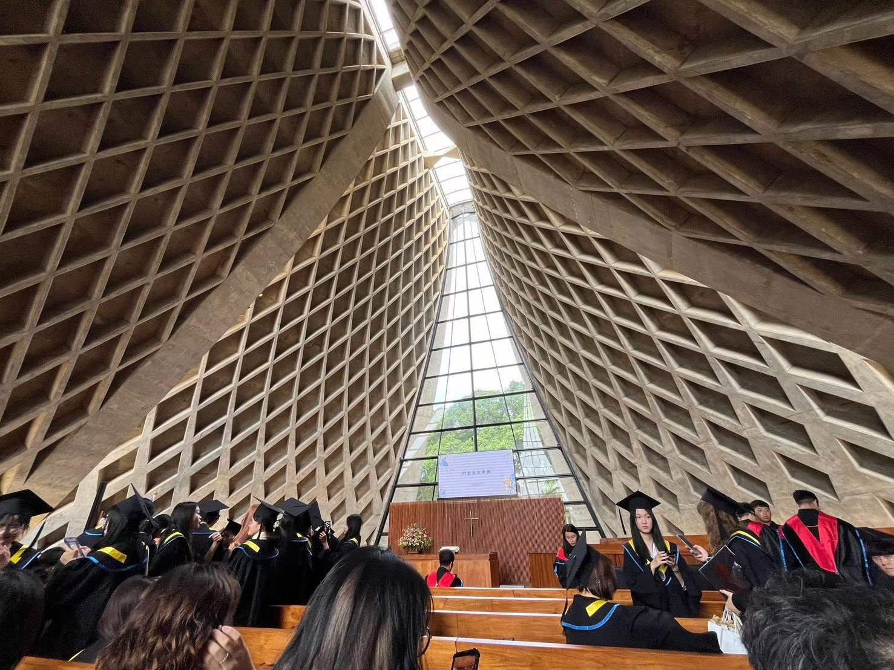

The Glimmer: 讓每一份純真，在數位世界如光閃耀
路思義教堂的設計核心在於「光」。建築師透過雙曲面的縫隙，讓陽光精準地灑落在祈禱者的身上。 這正如我們的數位時代——雖然科技如宏偉的建築般冰冷，但只要我們有心留下一道縫隙，愛與希望的「福音」便能滲透進來。 「微光計畫」便是要在浩瀚的行動網路中，為人們尋找並創造這道溫暖的微光。

這張照片紀錄了我參加重要夥伴畢業典禮的一刻。當我們坐在路思義教堂內，仰望著格狀天花板透下的微弱光線， 我突然意識到：最美的數位創作，不應只是炫技，而應是能承載情感的容器。 那場典禮象徵著一個階段的完成，也象徵著對未來的期許。我們希望透過這個網頁， 將這份「純真、善良與美好」的精神，分享給每一位在網路世界中尋找共鳴的靈魂。
「喜樂的心乃是良藥，憂傷的靈使骨枯乾。」
本計畫之視覺排版與敘述結構由創作者與 AI 共同構築，展現科技對人文價值的轉譯：